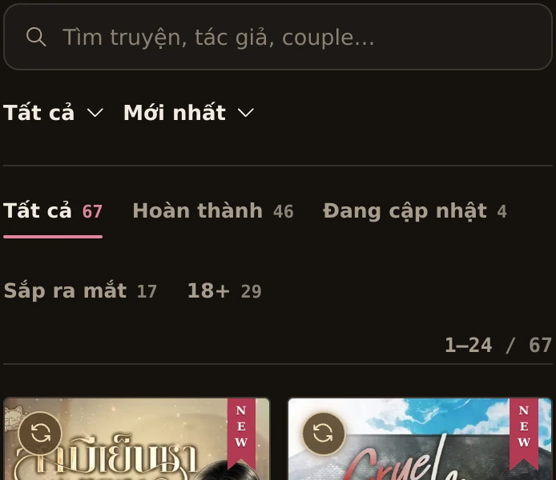

Mockup · chưa đụng vào site
Thanh tìm & lọc ở thư viện
Việc bỏ công tắc lưới/danh sách đã làm trong bản thật — ảnh chụp ngay bên dưới. Phần còn lại là ba phương án cho thanh Tìm · Năm · Sắp xếp, mỗi phương án có bản desktop và bản mobile 360px (khung nhỏ bên cạnh, chạy bằng iframe để media query chạy đúng). Mọi thứ dùng đúng class, màu và cỡ chữ của site thật.
Đã làm · bỏ công tắc kiểu xem
Thư viện giờ chỉ còn dạng lưới. Đã xoá: nút #viewSeg trong
markup, state.view + khoá ssochuz-view trong src/cz-home.js,
nhánh thẻ dạng danh sách (cardList/listHead) trong
src/cz-app.js, và toàn bộ CSS .list-view / .card.list /
.cl-* (50 khối luật). Kèm một chỉnh nhỏ: mũi tên ô chọn giờ nằm sát chữ thay vì
bị đẩy ra xa.
Thanh lọc sau khi bỏ công tắc
chụp từ site thậtẢnh chụp trực tiếp từ trang chủ trên dev server, không phải dựng lại.


Ba phương án cho thanh lọc
Điểm khác nhau: bao nhiêu khối có viền, và Năm / Sắp xếp nằm ở đâu. Phương án “giữ nguyên như đang chạy” chính là ảnh chụp ở trên — nếu bạn thấy vậy là đủ thì khỏi cần chọn.
Một hộp, ba ngăn
gọn nhất về số khốiÔ tìm, Năm và Sắp xếp nằm chung trong một khối duy nhất, ngăn nhau bằng kẻ tóc dọc — đúng kiểu “một hộp + kẻ tóc” bạn đã chốt cho thanh thư viện trước đây.
HTML thanh lọc gộp vào một .barB; hai ô chọn
mất viền riêng, chỉ còn kẻ tóc ngăn. Mobile: ô tìm chiếm trọn hàng đầu, hai ô chọn xuống
hàng dưới trong cùng khối.
Cả khu lọc chỉ còn một hình chữ nhật — mắt đọc một mạch từ trái sang phải. Lên mobile không bị rớt khối lẻ.
Khối cao 44px nên nặng hơn bản A một chút; đường kẻ dọc trong hộp cần canh đều, sai một ly là thấy ngay.
Tìm là chính, lọc là chữ
thoáng nhấtÔ tìm chiếm trọn một hàng (cao 48px). Năm và Sắp xếp xuống hàng dưới dưới dạng chữ + mũi tên, không viền, đứng cùng hàng với số kết quả. Tình trạng vẫn là dãy tab gạch chân như hiện tại.
Ô tìm thành hàng riêng; Năm/Sắp xếp thành chữ + mũi tên
(vẫn là <select> thật, chỉ bỏ khung). Số kết quả dời lên hàng lọc.
Ô tìm to, dễ bấm nhất; không còn khối viền nào ngoài ô nhập. Rất hợp mắt mobile.
Cao thêm một hàng (~40px) — đẩy lưới truyện xuống. Hàng lọc chữ nhỏ nên dễ bị bỏ qua hơn ô chọn có khung.
Một nút Lọc
nhiều việc nhấtTrên thanh chỉ còn ô tìm và một nút Lọc (kèm số điều kiện đang bật). Năm, Sắp xếp, tình trạng và 18+ chuyển vào tấm trượt — mở ra mới thấy.
Dựng thêm một tấm trượt (sheet) cho bộ lọc;
dãy tab tình trạng rời khỏi trang, thay bằng một dòng “Đang lọc: …”.
Thanh gọn nhất có thể, lưới truyện lên cao; mobile rất sạch.
Mất chỗ “thấy ngay”: muốn đổi tình trạng phải mở tấm trượt. Nhiều code mới, dễ sinh lỗi bàn phím/focus hơn ba phương án kia.